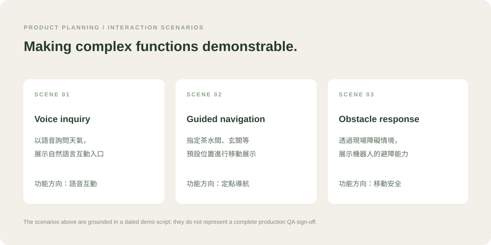
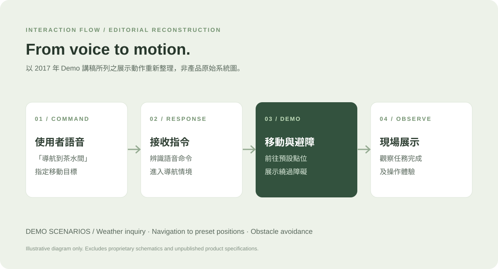

問題與限制
早期智慧機器人產品需要把語音、表情與操作功能整理成工程團隊可討論、使用者可理解的互動流程與展示情境。
真實智慧服務型機器人開發經驗：協助功能測試與紀錄、維護及調整功能流程、與研發確認；親自完成英文 Demo 影片企劃、拍攝、配音及剪輯。
早期智慧機器人產品需要把語音、表情與操作功能整理成工程團隊可討論、使用者可理解的互動流程與展示情境。
協助產品功能測試與紀錄、整理維護並調整功能流程，參與研發確認；負責英文 Demo 的企劃、拍攝、配音及剪輯。
以實際操作和測試觀察支援功能流程整理，並透過短片呈現產品互動，不宣稱個人設計或實作核心演算法。
完成產品流程相關工作與 Demo 製作；原始影像與公司素材的對外公開權利仍待確認。
尚無可確認的單一功能變更成效，不編造前後改善；原始照片與影片不在公開版內。
本頁產品示意與流程圖均重新繪製；未公開原公司商標、機器人原始照片或內部規格文件。
服務型機器人的功能跨越語音互動、移動導航與感測反應。若只有技術清單，使用者與利害關係人不容易理解產品實際能完成哪些任務。
這個案例聚焦在產品層面的工作：整理功能、規劃互動情境，以及把實機能力轉成可溝通的 Demo 順序與展示內容。
以下三個情境來自當年的實機 Demo 講稿：語音詢問、前往預設位置，以及繞行障礙。這些是當時計畫展示的項目，並非完整量產驗收結果。


示範流程中，使用者以語音要求機器人前往預設點位，現場再透過障礙情境展示機器人如何回應環境。作品頁刻意不將此概念圖誤標為控制系統實作。
在產品開發階段協助測試員工作，記錄實際互動觀察與測試條件；例如當年的語音收音時間測試。
維護與調整功能流程資料，與研發團隊確認互動步驟和實作安排；不宣稱自行撰寫機器人控制程式。
規劃英文實機展示的腳本、順序與拍攝安排，將功能整理成觀眾能理解的情境。
親自負責實際 Demo 影片拍攝、旁白／配音與剪輯後製，這是個人完成的展示交付物。
保留了當年的產品介紹與情境資料，可辨識接待、問答、導引等產品定位；屬產品規劃材料，不等於功能均已完成。
保留語音對話平台的 Intent／Entity／Training 研究簡報，作為當時互動技術研究的依據。
2017 年的 Demo 講稿明確包含天氣詢問、預設位置導航與避障展示，是本頁互動情境的直接依據。
作品頁不宣稱所有簡報中的飯店、賣場、餐廳或保全情境均已完成或正式商轉；不提供原始商業規格與公司影像。若未取得當年影片的公開授權，也不會直接上傳。
實機影片已保留；因原公司已結束營運、素材著作財產權尚未釐清，公開版本暫不嵌入原片。
真實照片已保留供後續編排。即使人物模糊，仍須先確認素材使用權。
協助進行 3、6、9、12 秒等條件的測試與紀錄，當時觀察到收音時間對實際使用體驗的限制。屬歷史測試觀察，非現行規格。
體會到實體產品的功能呈現必須結合互動流程、實際測試與情境展示；Demo 的目標是清楚表達可操作內容，而不是把規劃中的功能全說成已完成。